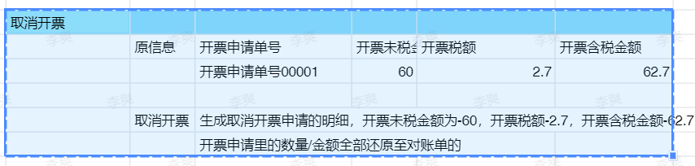
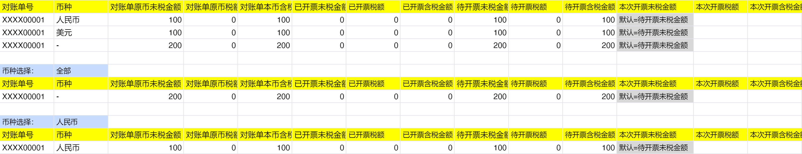
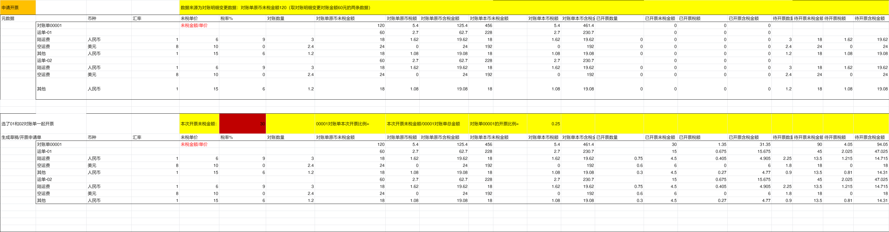
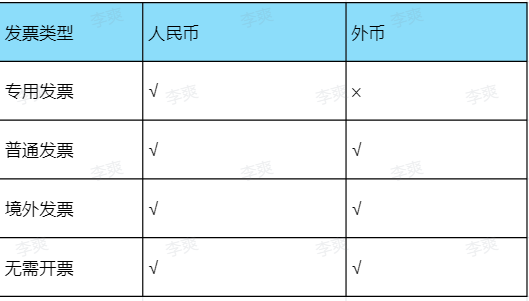
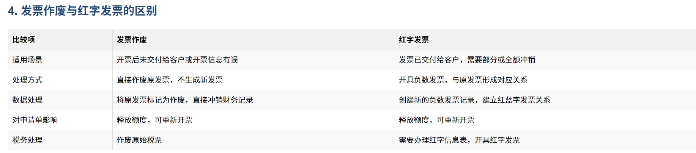

申请开票底层逻辑
通用逻辑
1、所有的筛选可自定义排序和自定义显示
2、所有的列表字段可自定义排序、显示
3、同一业务归属&同一客户&对账单待开票金额>0都可以申请开票；可以选择多个对账单申请开票
4、发票红冲关联蓝字发票顺序说明：
（1） 先按金额匹配度排序（精确匹配 > 部分匹配）
（2）再按开票日期降序排序（新 > 旧）
（3）最后按发票号码降序排序（大 > 小）
具体情况如下如下：
（1）完全金额匹配的发票
蓝字发票金额 = 当前红字发票金额
例：红字发票金额为1000元，则金额为1000元的蓝字发票排在最前，剩余的按照发票金额大小从大到小排（发票金额需>=红字发票金额）
（2）最近开票日期
在同等匹配度的情况下，开票日期越近排序越靠前
例：2023-06-01的发票排在2023-05-01的发票前面
（3）发票号码降序
在开票日期相同的情况下，发票号码越大排序越靠前
例：发票号20230601002排在20230601001前面
PS：已部分红冲的发票显示"剩余可红冲金额"
超过6个月的发票标记为"临近失效"
5、申请开票-审核通过后按币种生成发票规则（默认规则）


6、发票类型与币种对照表

7、取消开票


7、未对账数据开票后，不可再进行对账操作